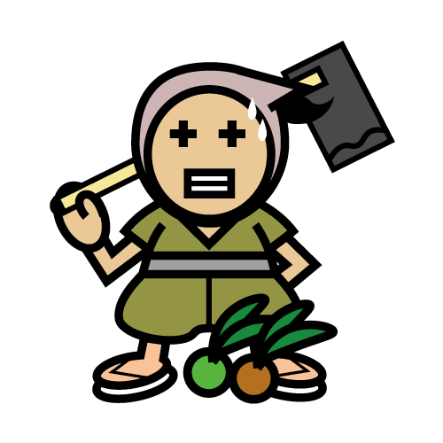
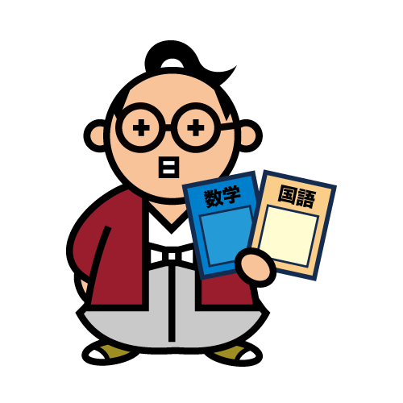

キミの集中力レベルは？
測定スタートどうやって測定するの？
測定の仕方
書画カメラやwebカメラを頭に装着できる「with※※」を用いた「手元測定」、自分の顔を映して測定する「顔測定」の二種類の方法があるよ！商品交換のできる「withポイント」をためるには、「手元測定」を選んでね！
キミの集中力レベル
が分かるでござる！
エコ侍
（えこざむらい）
Ex)「手元測定」の場合
-
STEP1
WebカメラをパソコンにUSB接続し、カメラを機器を認識させる。
-
STEP2
webカメラを頭に装着、または自分の利き腕とノートが映る位置にカメラを固定し、(1)書画カメラモード(2)withモードを選ぶ。
-
STEP3
ログイン後、「測定スタート」ボタンを押す。
-
STEP4

勉強をやめる時に「測定終了」ボタンを押す。
※AIが動きを全く検知しなくなると3(仮)分後に自動終了します。ノートに書く行為は、ポイント獲得率が1.2倍(仮)になります。
※30分以上継続すると、ポイント獲得率が1.2倍(仮)になりますので、休憩する場合一時停止ボタンを押してください。
※測定データを残すためには、利用登録およびログインが必要です。
※webカメラ・ヘッドマウントシステム「with」の詳細はこちら
ホッホッホッ
使い方が分かったら
さっそく測定じゃ！
キミの集中力レベルは？
測定スタート学習を記録しよう
学習記録のつけ方
「手元測定」はもちろん、「顔測定」でも学習記録をつけることが可能です。
勉強を終え「測定終了」ボタンを押すと、
□国語
□数学
□英語
□理科
□社会
□その他
□記録しない
上記のようなチェックボックスが出ますので、チェックを入れた後に保存ボタンを押してください。
学習記録を確認するためには、「学習記録を見る」ボタンを押してください。
※
自分が、どの教科にどれくらいの集中しているか可視化出来ます。
※
自分の成績を記入することで、自分の成長を確認することも可能です。
時間配分を把握
しながら進められるよ！
エコ町娘
（えこまちむすめ）
ポイントを利用しよう
現在のポイント数
150ポイント
ポイント数がわかるぞよ。
増やすには集中することじゃ！

エコ貴族
（えこきぞく）
「withポイント」について
「手元測定」モードで集中力の測定をしながら学習すると、集中時間に応じて「withポイント」がたまります。このポイントは教材や食材など、さまざまなモノに交換することが可能です。 交換できる商品はその都度更新されますので、特に食材は早めに受け取るようにしてください。
ポイントで交換できるもの
文房具やノートなど、様々な商品と交換できます。
ポイントで交換できるものに関しては詳しくは下のボタンから。
商品を見てみる
※
交換出来る商品は、食事つき個別指導型無料塾「ステップアップ塾」への支援者による善意の商品です。
※ ポイントの有効期限は、最終ログイン日から3年間(仮)です。
オホホホホ
さっそく集中力を
測るでありんす！

キミの集中力レベルは？
測定スタートキャラクター紹介
-

Eco僧侶
信条：子どもはみんなの宝物
たくさんの子どもを里親として受け入れる、慈悲深い上人。
途上国の絶対的貧困はもちろん、パッと見でわかりにくい相対的貧困問題に関心が強い。家畜のCO2問題に敏感で、菜食主義。
意外にもパイロット免許を持ち、所有する旧式のプロペラ機を用いて途上国で食糧等物資の支援を行っている。
廃油で動くディーゼルエンジンに換装しようか、悩んでいる。
※一〇〇式重爆撃機を支援物資運搬用に改造 担当SDGS項目
担当SDGS項目貧困をなくそう
-

Eco農夫
信条：食べるものに困らない世の中を
年貢の取り立てが厳しい中、死罪になることを承知の上で直訴を決行して命を落とした義人・茂左衛門の子孫。
ご先祖様の想いを引き継ぎ、飢餓で苦しむ人が一人でも減るよう日々農業に勤しむ。
冷害に強い新しい種子の開発をはじめ、古代種の保存や有機農法にも熱心。
利益を独り占めにしようとする人がとても嫌い。新開発した果物の種を奪う、外国人も嫌い。
水を節約できる水耕栽培のIT化を実践している。
担当SDGS項目
飢餓をゼロに
-
Eco典医
信条：肥満は万病の元
Eco将軍の御典医でありながら、お金のない庶民からはお金を取らずに治療を続ける名医。
腸活をはじめ、予防医療を推進する総合診療医でもある。
健康管理に関心が低い人に厳しい。「食いすぎなんだよ！」が口癖。
使い捨てメスを研ぎ、こっそりカッターとして使うのが趣味。
担当SDGS項目
すべての人に健康と福祉を
-

Eco教師
信条：勉強と同等に、人格教育を
「勉強も運動も、苦手な子どもがいるのは仕方がない。ただ道徳心や礼儀作法だけは身につけないとその子どもが大人になった時に恥をかく。」と、人格教育の重要性を説く教育者・学者。
同時に外国語教育を推進し、黒船の船員と無料英会話教室を運営している。
筆記練習はもっぱら裏紙を使うように指導。
友達は黒船のパリー提督。
担当SDGS項目
質の高い教育をみんなに
規約
【重要】
会員登録をされる前に、下記ご利用規約をよくお読みください。
規約には、本サービスを使用するに当たってのあなたの権利と義務が規定されております。「同意して会員登録へ」ボタンをクリックすると、あなたが本規約の全ての条件に同意したことになります。
この規約（以下「本利用規約」）は、NPO法人維新隊ユネスコクラブ（以下「弊社」）が運営するインターネットサービス「with+」において、弊社が提供するサイト（以下「本サイト」）の利用条件を定めるものです。
第1条 本サイトの目的と、ポイント商品について
- 本サイトは、教育格差の是正と、オンライン学習の利便性および集中力向上を目的に開発された「集中力測定およびポイント管理アプリケーション」です。
- ポイントによる商品交換は副次的で善意的な目的に過ぎず、ユーザーの希望する商品在庫・取得を保証するものではありません。
- ポイント交換可能な商品の品質保証等に関しては、商品のメーカー規約に準拠します。また、もしポイント交換で提供した商品品質に問題があった場合、当社が保証・交換に応じることはありません。
第2条 定義
-
定義
- 「ポイント」とは、本サイトで発行される「withポイント」を総称します。
- 「ユーザー」とは、本規約の内容に同意して、本サイトを利用する日本在住の小学生・中学生・高校生を指します。
- 「測定者」とは、本サイトを利用し集中力を測定するユーザーをいいます。
- 「交換者」とは、本サイトでためたポイントを使って商品を交換するユーザーをいいます。
- 「商品」とは、本サイトでポイント交換が可能な教材・食材等をいいます。
- 「個人情報」とは、個人情報保護に関する法律に定める「個人情報」を指すものとし、ユーザーが入力した氏名、住所エリア、生年月日、性別、アカウント情報（電子メールアドレス、パスワード等）、利用履歴等をいいます。
- 「提供者」とは、ポイント交換可能な商品を無償提供してくださった支援者をいいます。
-
適用
本条の定義は、別途定義されている場合を場合を除き、本規約のほかプライバシーポリシーにおいても適用されます。
第3条 本規約への同意および変更
-
本規約への同意
本規約は、本サイトの利用に関する条件をユーザーと弊社との間で定めることを目的とし、本サイトの利用に関わる一切の関係に適用されます。ユーザーは、本規約の定めに従って本サイトを利用するものとし、本サービスを利用することにより本規約に同意をしたものとみなされます。
-
本規約の変更
弊社は、必要に応じ、本規約の内容を随時変更できるものとします。本規約の変更後に、ユーザーが本サービスを利用した場合、ユーザーは本規約の変更に同意をしたものとみなされます。弊社は、本規約の改定又は変更によりユーザーに生じたすべての損害について、一切の責任を負いません。
第4条 ユーザー登録およびアカウント情報
-
登録
ユーザー登録は、必ず本人または保護者が行ってください。また教材の提供や他者との集中力の比較などにおいて、ユーザーに有効な情報をお届けするためにも、ユーザー登録の際は必ず正確な情報を入力してください。また、同一ユーザーによる複数のアカウント登録を行うことはできないものとします。
-
登録拒否
弊社は、ユーザー登録をされようとする方が以下各号のいずれかに該当する場合、ユーザー登録の申請を承認しない、または取り消すことがあります。
- 過去に本規約違反等により、弊社から利用停止等の処分を受けている場合
- 登録内容に虚偽の情報が含まれている場合
- 弊社の運営、サービス提供若しくは他のユーザーの利用を妨害する又は支障をきたすおそれがあると弊社が判断した場合
- 反社会的勢力の関係者である場合
- その他弊社が不適当であると合理的な理由に基づき判断する場合
-
ユーザーの確約
ユーザーは、以下について確約するものとします。
- 反社会的勢力に該当しない、かつ将来にわたっても該当しないこと
- 自ら又は第三者を利用して、暴力的な要求行為、法的な責任を超えた不当な要求行為、取引に関して脅迫的な言動をする、又は暴力を用いる行為、風説を流布し、偽計を用い又は威力を用いて弊社の信用を毀損し又は弊社の業務を妨害する行為、その他これらに準ずる行為を行わないこと
-
アカウント情報の管理
ユーザーは、入力したメールアドレス、パスワード等の情報（以下「アカウント情報」といいます。）を自ら管理する責任を負います。ユーザーは、アカウント情報を第三者に利用させることや、譲渡、売買、質入、貸与、その他形態を問わず処分することはできません。
-
アカウント情報の損害等
アカウント情報はユーザーが各自管理し、情報漏洩、使用上の過誤、第三者の使用、不正アクセス等による損害の責任はユーザーが負うものとします。弊社は責任を負わないものとします。
-
アカウント情報の漏えい
ユーザーは、アカウント情報が第三者に漏えいした場合、又はそのおそれがある場合、速やかに弊社まで連絡するものとします。また、その際に弊社の指示がある場合にはこれに従うものとします。
第5条 ユーザー登録の取消等
-
ユーザー登録の取消・利用停止等
弊社は、ユーザーが以下の各号のいずれかに該当した場合又は該当したと弊社が合理的な理由に基づき判断した場合は、事前の通知なしに、ユーザー登録の取消、本サイトへのアクセス拒否、利用停止等、又は、ユーザーに関連するコンテンツや情報の全部若しくは一部の削除の措置をとることができるものとし、弊社は、その理由を説明する義務を負わないものとします。なお、弊社は、ユーザーが以下第８条のいずれにも該当しないことを確認するために、弊社が必要と判断する本人確認を行うことができ、かかる本人確認が完了するまで本サービスの全部又は一部へのアクセス拒否、利用停止等の措置をとることができます。
-
弊社の免責
弊社は本条の措置により生じたユーザーの損害について、一切の責任を負わないものとします。
第6条 ユーザーの退会
-
退会の手続
ユーザーは、弊社に退会を希望する旨を申し出ることができ、弊社の判断により認められた場合には退会することができます。ただし、最終利用日から3年経過したユーザーは、ポイントを失効した上で自動退会とします。
-
弊社の免責
弊社は本条の措置により生じる損害について、なんら責任を負わないものとします。
第6条 ユーザーの退会
-
退会の手続
ユーザーは、弊社に退会を希望する旨を申し出ることができ、弊社の判断により認められた場合には退会することができます。ただし、最終利用日から3年経過したユーザーは、ポイントを失効した上で自動退会とします。
-
弊社の免責
弊社は本条の措置により生じる損害について、なんら責任を負わないものとします。
第7条 個人情報等の取扱い
-
プライバシーポリシー
弊社は、本規約のほか、プライバシーポリシーに従って個人情報等を取り扱います。
-
プライバシーポリシーへの同意
ユーザーは、プライバシーポリシーを必ず確認し、その内容に同意した上で、本サイトを利用するものとします。
-
ユーザーによる利用
ユーザーは、本サイトを通じて得た個人情報等に関し、本サイトの利用範囲内においてのみ利用することができ、それ以外の利用は不可とします。
第8条 禁止事項
弊社は、本サイトに接したユーザーおよび第三者の、以下行為を禁止します。
- 商品の転売
- ポイントの不正獲得
- 虚偽情報のユーザー登録
- 複数のユーザー登録
- アカウントの不正利用
- 本規約への違反、または不正行為
- 他のユーザーや第三者に迷惑をかける行為
- 当サイトに掲載された、知的財産の二次利用
第9条 商品の交換
-
交換手続
ユーザーは、弊社の定める手続によりポイント交換の意思をもって、各自の意思で交換を行うものとします。
-
ポイントの獲得方法
商品交換を行う上で必要となるポイントは、ユーザーが当サイトの集中力測定機能を使い、学習を一定時間行った際に獲得できるものとします。ただし、勉強と関係のない漫画や動画を見るなどの不正の上でためたポイントは無効になるものとし、ユーザーは予めこれを承諾するものとします。
-
弊社の免責
ユーザーのポイント交換等によって、ユーザーおよび第三者に生じる損害について、弊社は一切の責任を負わないものとします。
第10条 取引の実行
-
交換契約の成立
交換者が特定の商品選択をした時をもって当該商品の交換契約が成立するものとします。交換者は、交換契約に基づき発生した権利義務を第三者に譲渡、担保提供などその他の処分をすることはできないものとします。
-
引き取りについて
交換契約が成立した場合、交換者は当サイトに定めた会場から予約指定日に引き取ることとします。引き取りいただけない場合、引き取り予定日から3日後に商品交換の権利は喪失し、その場合ポイント返還はいたしません。
-
発送について
商品の郵送は、有償無償を問わず受け付けていません。
-
物品等に関するトラブル
商品等に関してトラブルが発生した場合、弊社は商品交換には応じません。ポイント返還に限り、状況に応じた対応をします。
-
梱包の不備や物品の瑕疵による返品等について
本サイトの商品は、大多数が有志支援者からの無償提供を前提とした善意の商品です。梱包の不備や瑕疵を理由にした物品の返品、修理、交換等の請求はご遠慮ください。
-
弊社の免責
ユーザーが本サイトに入力したアカウント情報が第三者に利用された、若しくは入力情報の内容が不正確であった、などによってユーザーに生じた損害に関して、弊社は一切の責任を負わないものとします。
第11条 他のサービスへの遷移
ユーザーが本サイトを利用するにあたり、本サイトから、弊社グループ又は第三者が運営する他のサービス（以下「外部サービス」）に遷移する場合があります。ユーザーは予めこれに同意するものとし、本規約および外部サービスの利用規約等を遵守して、本サイトおよび外部サービスを利用するものとします。
第12条 本サイトの中断・終了および変更
-
本サイトの中断
弊社は、以下の各号のいずれかに該当する場合には、ユーザーに事前に通知することなく一時的に本サイトの全部又は一部を中断する事ができるものとします。
- サーバー、通信回線、その他の設備の故障、障害の発生又はその他の理由により本サイトの提供ができなくなった場合
- 定期的な又は緊急のシステム（サーバー、通信回線や電源、それらを収容する建築物などを含む）の保守、点検、修理、変更を行う場合
- 火災、停電等により本サイトの提供ができなくなった場合
- 地震、噴火、津波等の天災により本サイトの提供ができなくなった場合
- 戦争、暴動、騒乱、労働争議等その他不可抗力により本サイトの提供ができなくなった場合
- 法令又はこれに基づく措置により本サイトの提供ができなくなった場合
- その他運用上又は技術上、弊社が必要と判断した場合
-
本サイトの終了および変更
弊社は、適用法令に定める手続に従うことにより、本サイトの全部又は一部を任意に終了および変更できるものとします。本サイトを終了する場合においては、弊社が適当と判断する方法で、可能な限り事前にユーザーにその旨を通知し、または公表するものとします。
第13条 知的財産権およびコンテンツ
-
知的財産権等の帰属
本サイトを構成するすべての素材に関する権利は、弊社又は当該権利を有する第三者に帰属しています。ユーザーは、本サイトのすべての素材に関して、一切の権利を取得することはないものとし、権利者の許可なく、所有権、著作権を含む一切の知的財産権、肖像権、パブリシティー権等、コンテンツ素材に関する権利を侵害する一切の行為をしてはならないものとします。本規約に基づく本サイトの利用許諾は、弊社又は当該権利を有する第三者の権利の使用許諾を意味するものではありません。
-
弊社による利用
交換者によりSNS等に投稿された出品物の写真、動画、情報等に関しては、本サイトの宣伝、運営、研究開発および発表等を目的として、弊社および弊社の指定する者が自由に利用できるものとします。
-
コンテンツに関する責任
ユーザー等が本サイトに関連して発信又は掲載したコンテンツに関する一切の責任は、当該ユーザー等が負うものとし、弊社は、その内容、品質、正確性、信憑性、適法性、最新性、有用性等について、確認いたしません。また、弊社は、それらに関して保証しないものとします。
-
コンテンツの内容等
ユーザー等は、他のユーザー等が発信又は掲載するコンテンツについて、その内容や品質、正確性をユーザーご自身で判断する必要があります。弊社は、ユーザーおよび第三者が弊社のコンテンツを利用することにより生じる損害について、一切の責任を負わないものとします。
-
コンテンツの変更および削除
弊社は、ユーザーが本規約に違反又は本規約の精神に照らして不適切な行為を行ったと弊社が判断した場合、当該ユーザーが掲載したあらゆるコンテンツを、事前の通知なしに変更および削除できるものとします。
第14条 ユーザー責任およびトラブルについて
-
必要な機器の準備等
本サイトを利用するために必要なコンピューター、スマートフォンその他の機器、ソフトウェア、通信回線その他の通信環境等は、ユーザーの費用と責任において準備し維持するものとします。また、その機器、ソフトウェア、通信環境等の設置や操作についても、ユーザーの費用と責任で行っていただく必要があります。
-
ネットワークの経由等
ユーザーは、本サイトを利用する際に、種々のネットワークを経由する場合があることを理解し、接続しているネットワークや機器等によっては、それらに接続したり通過するために、データや信号等の内容が変更される可能性があることを理解したうえで、本サイトを利用するものとします。
-
手続の成立
ユーザーがインターネット回線を通じて行う本サイトへの入力、交換、退会、その他の手続は、弊社のサーバーに当該手続に関するデータが送信され、弊社のシステムに当該手続の内容が反映された時点をもって有効に成立するものとします。
-
トラブルの解決
本サイトに関連してユーザー間又はユーザーと第三者間で発生したトラブルに関して、ユーザーは各自の費用および責任で解決するものとします。トラブルが生じた際には当事者間で解決するものとし、当該トラブルにより弊社が損害を被った場合、当事者は連帯して当該損害を賠償するものとします。
-
トラブル費用の負担
弊社とユーザー間で紛争が生じた場合において、ユーザーは当該紛争に関連して弊社に発生した損害を賠償するものとします。
第15条 損害賠償
-
ユーザーの責任
ユーザーが本規約に違反した場合、当該ユーザーが、当該違反により損害を受けたユーザーおよび第三者に対する損害賠償責任を含む、一切の責任を負うものとします。ユーザーがかかる違反行為を行ったことにより、弊社が損害を被った場合は、当該ユーザーその他関連当事者は連帯して当該損害を賠償するものとします。
-
弊社の免責
弊社は、弊社による本サイトの運営停止、終了又は変更、ユーザー登録の取消、コンテンツの削除又は消失等に関連してユーザーが被った損害につき、一切の賠償責任を負わないものとします。
第16条 一般条項
-
通知
- 本サイトに関する弊社からユーザーへの通知又は連絡は、弊社が運営するウェブサイト又はアプリケーション内の適宜の場所への掲示の他、弊社が適当と判断する方法により行なうものとします。弊社は、個々のユーザーに通知および連絡をする必要があると判断した際、登録された電子メールアドレスに対し通知および連絡を行うことがあります。
- ユーザーが弊社に通知、連絡又は問い合わせをする必要が生じた場合、本サイトのお問い合わせフォームを利用するものとし、電話や来訪を行うことはできないものとします。弊社は、かかる連絡又は問い合わせがあった場合、弊社が定める方法により、ユーザーの本人確認を行うことができるものとします。
-
譲渡禁止
ユーザーは、本規約に基づく契約上の地位又は権利若しくは義務を、弊社の書面による事前の承諾なく、第三者に対し、譲渡、移転、担保設定、貸与、その他の処分をすることはできません。
-
事業譲渡
弊社が本サイトに係る事業を第三者に譲渡する場合、本サイトに登録された情報を当該事業の譲受人に譲渡することができるものとし、ユーザーはかかる譲渡につき予め承諾するものとします。
-
分離可能性
本規約のいずれかの条項又はその一部が、法令等により無効と判断された場合、無効とされた該当箇所以外は継続して有効に存続するものとします。
-
定めのない事項等
本規約に定めのない事項又は本規約の解釈に疑義が生じた場合には、弊社およびユーザーは、信義誠実の原則に従って協議の上速やかに解決を図るものとします。
-
言語
本規約は、日本語を正文とします。本規約につき、参考のために英語による翻訳文が作成された場合でも、日本語の正文のみが契約としての効力を有するものとし、英訳はいかなる効力も有しないものとします。
-
準拠法および裁判管轄
本規約は、日本法に基づき解釈されるものとし、ユーザーと弊社の間で生じた紛争については、その内容に応じて東京簡易裁判所又は東京地方裁判所を第一審の専属的合意管轄裁判所とします。
お問合せ
- 電話番号
- ：090-0000-0000
- メールアドレス
- ：xx@example.com